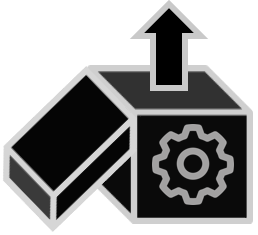
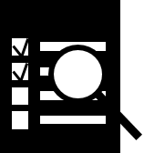

Welcome to flex_extract’s user documentation!¶
Flex_extract is an open-source software to retrieve meteorological fields from the MARS archive of the European Centre for Medium-Range Weather Forecasts (ECMWF) to serve as input for the FLEXTRA/FLEXPART atmospheric transport modelling system.
|

Installation |
ECMWF data |
Documentation |
Quick Start |

Evaluation |
Developer
Note 
This work is licensed under the Creative Commons Attribution 4.0 International License. To view a copy of this license, visit http://creativecommons.org/licenses/by/4.0/ or send a letter to Creative Commons, PO Box 1866, Mountain View, CA 94042, USA. |